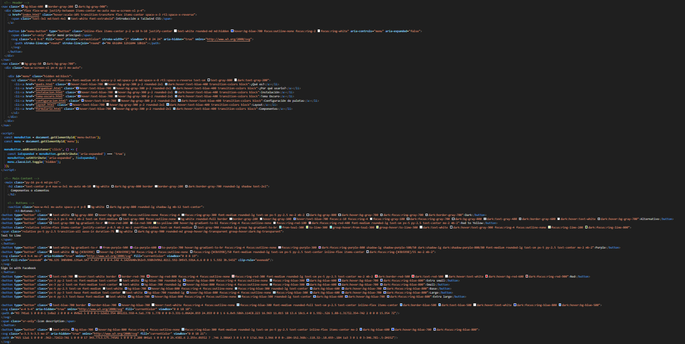
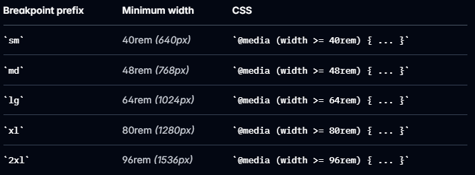

En Tailwind puedes aplicar los estilos directamente en el HTML sin necesidad de crear o modificar un archivo CSS para la mayoría de los casos, como en el siguiente caso.
<div class="bg-black rounded-xl shadow-lg p-6 max-w-sm"> <h2 class="text-2xl font-bold mb-4 text-white">Título de la tarjeta</h2> <p class="text-white">Esta es una tarjeta simple hecha con Tailwind.</p> </div>
<div class="card"> <h2>Título de la tarjeta</h2> <p>Esta es una tarjeta simple con CSS.</p> </div>
.card {
background-color: black;
border-radius: 1rem;
box-shadow: 0 4px 6px rgba(0,0,0,0.1);
padding: 1.5rem;
max-width: 24rem;
}
.card h2 {
font-size: 1.5rem;
font-weight: bold;
margin-bottom: 1rem;
}
.card p {
color: white;
}
Esta es una tarjeta simple hecha con Tailwind.
Aunque esta pueda ser una gran caracteristica de Tailwind, también tiene sus desventajas, como el gran ruido que causa en la pagina al juntar el diseño y la estructura del Html. En proyectos grandes, esto puede dificultar la mantenibilidad del código y la colaboración entre desarrolladores.
En Tailwind puedes aplicar los estilos directamente en el HTML sin necesidad de crear o modificar un archivo CSS para la mayoría de los casos, como en el siguiente caso.
<p class="text-base md:text-lg lg:text-xl"> Este texto cambia de tamaño según el dispositivo. </p>
p {
font-size: 1rem;
}
@media (min-width: 768px) {
p { font-size: 1.125rem; }
}
@media (min-width: 1024px) {
p { font-size: 1.25rem; }
}
Esto se logra gracias a los Breakpoints de Tailwind, que permiten aplicar estilos específicos en función del tamaño de la pantalla.
